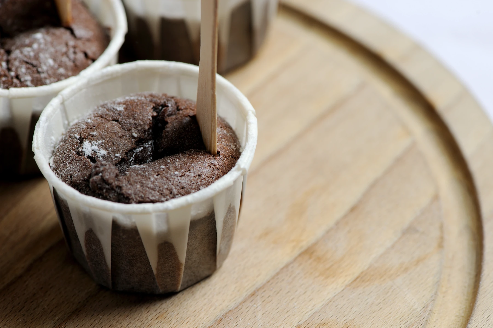

Home
Chocolate Fondant

Description
A deep chocolatey flavour will have you making these Tom Aikens fondants again and again. This is a quick and easy chocolate fondant recipe to follow, making it perfect for those moments when you're craving something chocoholic and sweet.
Ingredients
Chocolate Fondant
- 125g of unsalted butter, plus extra for greasing
- 150g of sugar
- 125g of dark chocolate
- 3 large eggs
- 35g of flour
Crème Anglaise
- 4 egg yolks
- 150g of sugar
- 1 vanilla pod, split and seeds scraped out
- 200ml of milk
- 200ml of cream
Method
- Start with the crème anglaise. Whisk the egg yolks with the sugar and vanilla seeds until pale. Pour the milk and cream into a pan, add the vanilla pod and place on a low heat for 5 minutes to infuse
- Remove the vanilla pod and add the milk and cream mixture to the egg yolks and sugar. Whisk well, then return to a pan over a low heat. Cook until the mixture reaches a temperature of 85°C or coats the back of a spoon. Allow to cool and set aside to serve with the chocolate fondants
- Butter 6 ramekins and sprinkle the insides with the sugar. Preheat the oven to 200C°/Gas mark 6. Melt the butter and chocolate in a bowl set over a pan of simmering water. Whisk the eggs and the 150g of sugar together for a minute or two in a bowl, then add the flour and the melted chocolate mixture
- Pour into the prepared ramekins and bake in the oven for 8-10 minutes - the centres should still be runny. Leave the chocolate fondants to rest for a minute or so before serving